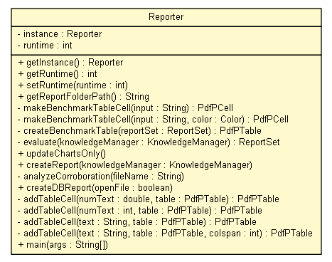

tud.iir.reporting
Class Reporter

java.lang.Object
 tud.iir.reporting.Reporter
tud.iir.reporting.Reporter
public class Reporter
- extends java.lang.Object
The Reporter creates reports.
| Methods inherited from class java.lang.Object |
clone, equals, finalize, getClass, hashCode, notify, notifyAll, toString, wait, wait, wait |
instance
private static Reporter instance
runtime
private int runtime
Reporter
private Reporter()
getInstance
public static Reporter getInstance()
getRuntime
public int getRuntime()
setRuntime
public void setRuntime(int runtime)
getReportFolderPath
public static java.lang.String getReportFolderPath()
makeBenchmarkTableCell
private com.lowagie.text.pdf.PdfPCell makeBenchmarkTableCell(java.lang.String input)
makeBenchmarkTableCell
private com.lowagie.text.pdf.PdfPCell makeBenchmarkTableCell(java.lang.String input,
java.awt.Color color)
createBenchmarkTable
private com.lowagie.text.pdf.PdfPTable createBenchmarkTable(ReportSet reportSet)
evaluate
private ReportSet evaluate(KnowledgeManager knowledgeManager)
- Evaluate the measures for all domains and create a report holding those values.
- Returns:
- A set of reports.
updateChartsOnly
public void updateChartsOnly()
- Create a report for the current extraction process.
the report will be created in the correct folder depending on whether the complete web or only a selction was used for extraction
three report files will be created:
1. the complete result set with all measures for each domain will be saved
2. only the total and averaged results will be saved
3. a pdf file with a table with all measures for all domains and charts will be saved
createReport
public void createReport(KnowledgeManager knowledgeManager)
analyzeCorroboration
private void analyzeCorroboration(java.lang.String fileName)
createDBReport
public void createDBReport(boolean openFile)
addTableCell
private com.lowagie.text.pdf.PdfPTable addTableCell(double numText,
com.lowagie.text.pdf.PdfPTable table)
addTableCell
private com.lowagie.text.pdf.PdfPTable addTableCell(int numText,
com.lowagie.text.pdf.PdfPTable table)
addTableCell
private com.lowagie.text.pdf.PdfPTable addTableCell(java.lang.String text,
com.lowagie.text.pdf.PdfPTable table)
addTableCell
private com.lowagie.text.pdf.PdfPTable addTableCell(java.lang.String text,
com.lowagie.text.pdf.PdfPTable table,
int colspan)
main
public static void main(java.lang.String[] args)
- Parameters:
args -